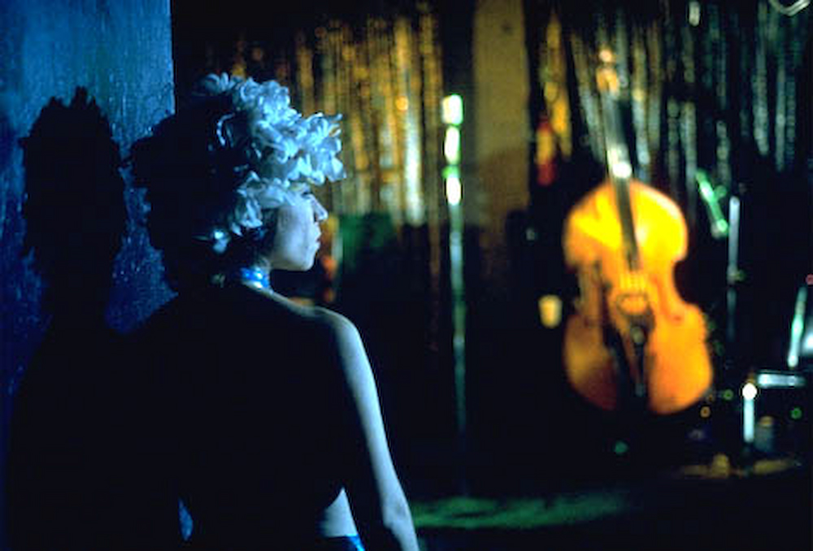
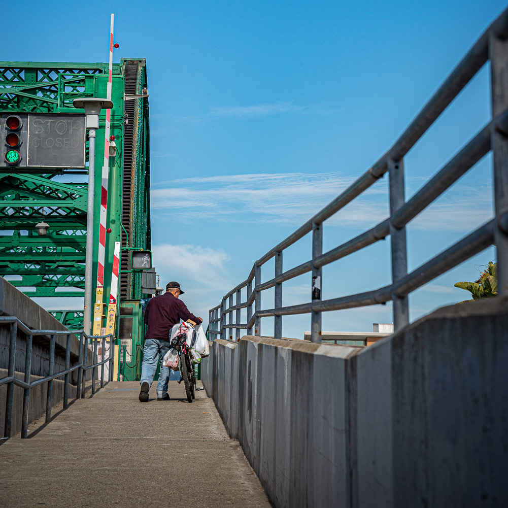
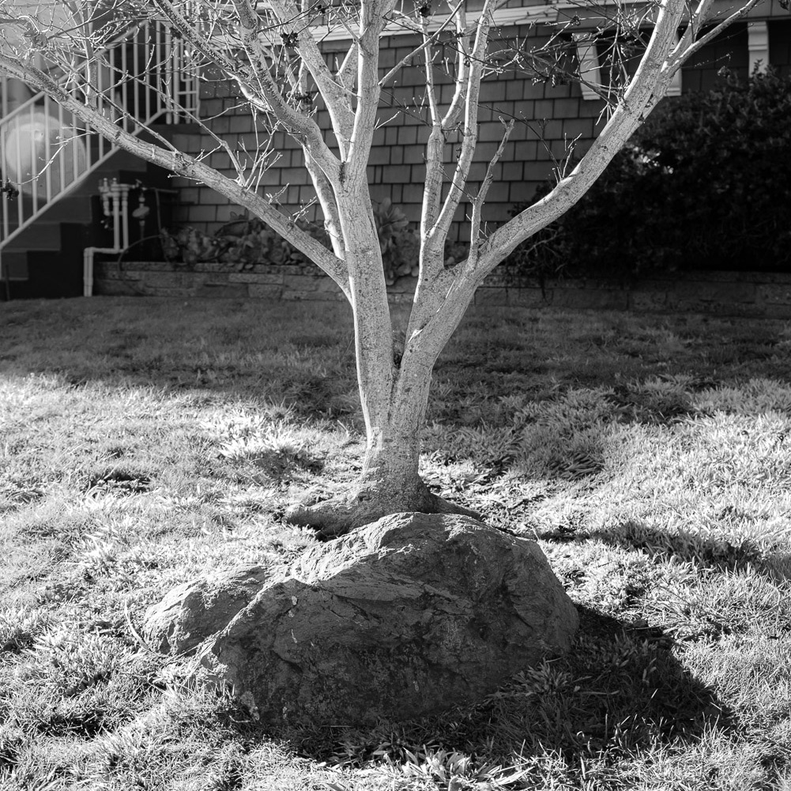

Rule of Thirds
Place objects and focal points along lines created by dividing the image into thirds, horizontally and
vertically.

Leading Lines
Leading lines are vectors or lines that draw the viewer's eye a certain direction or to a certain point
in the composition.
Aspect Ratio
Aspect Ratio is the ratio of the width to the height of the image, or the long side to the short side.
Frame within a Frame
You can use objects in the foreground to 'frame' objects in the background, which can help direct the
viewers eye to you subject.
Balance
Balance refers to balancing the visual interest within the image. The composition 'feels' right.

Symmetry
Symmetry or a Static Balance is when visual weight is equal across an image, usually across the vertical
or horizontal axis. It feels centered.